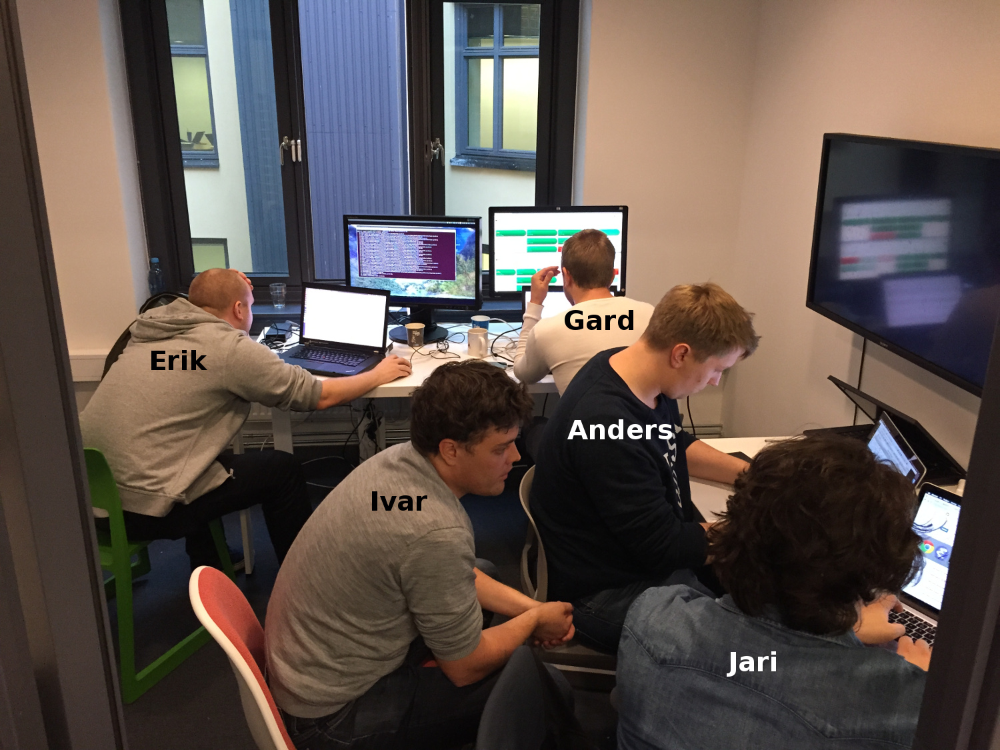

class: center, middle inverse .left.large[ # unleash .silver[:: verb] 1. _release (a dog) from a leash._ 2. _cause (a strong or violent force) to be released or become unrestrained._ ] ??? Unleash - en open-source løsning for feature toggling --- class: background-img # Feature Toggles <img src="../images/Merrydown_Cider Factory.jpg"> .img-src[https://www.flickr.com/photos/howzey/3805038515] ??? Feature Toggles er en enkel teknikk - Skille mellom **release** og **deploy** av funksjonalitet - **Økt kontroll:** - for hvem og når funksjon blir aktiv - Gradvis utrulling av ny funksjonalitet --- # Feature toggles: oppsummert .large[ - Skille **release** og **deploy** av funksjonalitet¹ - Teste ny funksjonalitet tidlig i produksjon - Gradvis utrulling av ny funksjonalitet - Lynrask tilbakerulling ] .bottom[¹ Prioritert initiativ fra TLG] --- class: background-img # One kick-ass team!  ??? ** Dette er gjengen** - En felles løsning for FINN - Utforsket eksisterende løsninger - Interne og eksterne tredjeparts løsningen - Ingen løste finn sine behov - Åpen prosess på _Confluence, Yammer, Hipchat og GitHub_ - **TAKK** til alle som har bidratt i diskusjonen! ** Et samarbeid på tvers av team** - De som skal bruke tjenesten har fått lov å være med å lage den - Morsom og insprirende måte å jobbe på --- # Unleash .large[ - Feature toggles i FINN - _feature toggles_ i ett verktøy - en felles robust og stabil klient - Unleash _eies_ av UP i FINN - Open source ] <br /><br /> .right[ ### https://github.com/finn-no/unleash ] ??? - Endte opp med å lage Unleash - Løser _feature toggles_ for FINN - UP eier Unleash i FINN - Open source - andre selskaper kan dra nytte av det vi gjør - andre selskaper kan bidra til en felles løsning --- class: middle # Aktiveringsstrategier .large[ - ** Regler som bestemmer om en _feature toggle_ er aktiv** - Basert på bruker, rolle etc. - Basert på dato - ** Gradivs utrulling av funksjonalitet** ] ??? - det morsomme med feature toggling - enkle regler som bestemmer om en funksjon regnes som aktiv - gir oss kontroll - for hvem og når en funksjon blir aktiv - gradivis utrulling av funksjoner --- class: inverse # Hva løser IKKE Unleash? .large[.large[ - AB-testing - Canary release - Business toggles ]] ??? - AB testing - er mer enn bare å skru funksjoner av og på. - kan være en komponent i din AB-test implementasjon - Canary release - rulle ut til noen få noder først - Businiess toggles - F.eks: gravide mødre i Oslo skal få denne versjonen. --- # Milestones ** Lukket beta ** - In progress .green[✓] - PS: ikke feature complete - Fokus: ytelse og stabilitet ** Release Party - (ETA 12. desember) ** - Java-klienten stabil og feature complete - Alle kan ta i bruk Unleash .silver[** Veien videre ** - Tilgangskontroll - Traceability - Interne FINN-spesifikke strategier - Flere klienter - Node ] #### https://github.com/finn-no/unleash/milestones --- class: middle inverse # Mer info? ### HIPCHAT: .silver[unleash] ### EPOST: .silver[unleash@finn.no] ### GITHUB: .silver[https://github.com/finn-no/unleash]